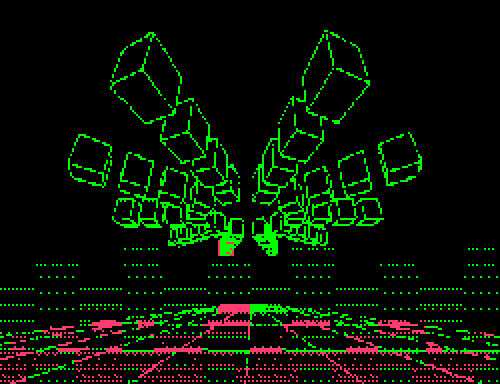

Es un proyecto construido solo en mi tiempo libre, nada con rigor estrictamente disciplinado
Este es nuestro refugio intelectual, un espacio reservado para los pensamientos más profundos y ocultos de nuestra mente. Gracias por adentrarte, aunque sea brevemente, en el ámbito más íntimo de mi ser. Si decides participar, sé bienvenido, pero te invito a hacerlo con todo lo que eres, a involucrarte completamente.
Aquí, intento plasmar con cautela aquello que siempre he anhelado experimentar y comprender en distintos aspectos de la existencia. Este rincón, aunque pequeño, está destinado a inspirar. Ojalá te sirva como un espejo para construir tu propio universo en la red, un reflejo de tu esencia.
Nuestra amistad ya casi alcanza una década. A lo largo de este tiempo, cada uno de nosotros ha tomado caminos distintos, especializándose en disciplinas diferentes. No compartimos las mismas ideologías, intereses, ni gustos personales, lo que nos hace únicos en nuestra diversidad. Sin embargo, a pesar de estas diferencias, hay algo que nos une, algo que comenzó como una casualidad pero que ahora tiene un significado profundo para cada uno de nosotros.
Aunque nada nos obliga a mantener este lazo, tampoco queremos alejarnos y desaparecer para siempre. Aceptamos, tanto por destino como por azar, que esta es nuestra historia. Y por ello, más que por deseo, actuamos en consecuencia, aunque no siempre comprendamos qué o quién nos colocó en este lugar.
El tributo aleatorio que nos rodea nos fascina, y ese pequeño y singular lazo que nos mantiene unidos, aunque invisible, nos da fuerza. Las diferencias y contradicciones siempre estarán presentes, pero el hilo invisible del tiempo y la casualidad actúan como un vínculo que nos permite seguir aquí, juntos.
Por eso, he decidido plasmar nuestra historia, dejar una huella en la red. Te invito a ser consciente de tu papel en este sistema aparentemente aleatorio, y a hacer algo al respecto, aunque al final, pueda parecer inútil.

BIENVENIDOS A LOS JUEGOS DE CONSCIENCIA
debes estar seguro y ser consciente de lo que es la muerte y, de ti mismo si dudas, no entres
Una vez dentro verás una lista de los multiples juegos que te ofezco, te sugiero leer primero para que tipo de personas está diseñado el juego, y entra con el que mas te identifiques.
 Este es nuestro refugio intelectual, un espacio reservado para los pensamientos más profundos y ocultos de nuestra mente. Gracias por adentrarte, aunque sea brevemente, en el ámbito más íntimo de mi ser. Si decides participar, sé bienvenido, pero te invito a hacerlo con todo lo que eres, a involucrarte completamente.
Aquí, intento plasmar con cautela aquello que siempre he anhelado experimentar y comprender en distintos aspectos de la existencia. Este rincón, aunque pequeño, está destinado a inspirar. Ojalá te sirva como un espejo para construir tu propio universo en la red, un reflejo de tu esencia.
Este es nuestro refugio intelectual, un espacio reservado para los pensamientos más profundos y ocultos de nuestra mente. Gracias por adentrarte, aunque sea brevemente, en el ámbito más íntimo de mi ser. Si decides participar, sé bienvenido, pero te invito a hacerlo con todo lo que eres, a involucrarte completamente.
Aquí, intento plasmar con cautela aquello que siempre he anhelado experimentar y comprender en distintos aspectos de la existencia. Este rincón, aunque pequeño, está destinado a inspirar. Ojalá te sirva como un espejo para construir tu propio universo en la red, un reflejo de tu esencia.